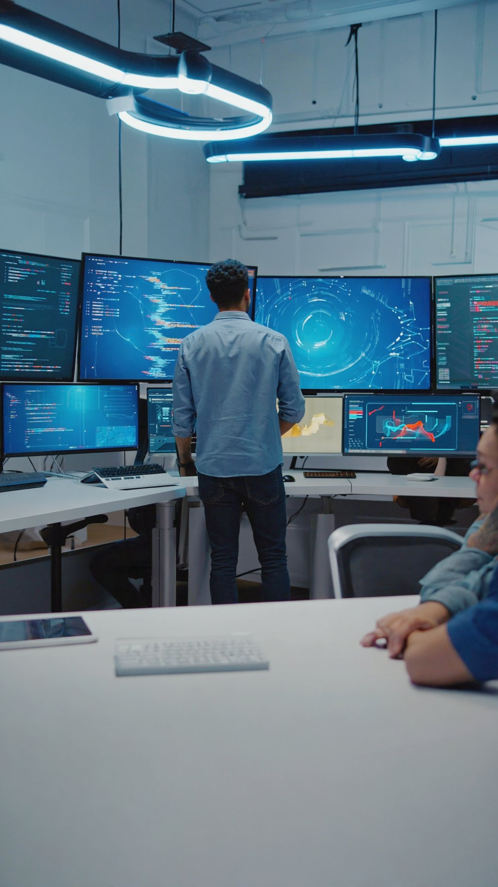

Positioning your engineering firm for success means having the software, hardware, and communications technology to connect with both your internal team and your clients quickly, effectively, and without interruption. It's all possible with DTCloudOn.
From complex design software to the powerful systems needed to run it, your business needs the best equipment and applications to stay competitive in the engineering industry. You also need IT experts who can address issues, protect your data, and provide peace of mind to your employees and your clients.
Get specialized engineering IT support →Our team will assemble an array of services to meet your needs today and prepare for the ever-expanding needs of your growing business.

No business is one-size-fits-all, so your IT solutions shouldn't be cookie-cutter either. Get in touch with DTCloudOn today, and we'll start designing your custom IT management plan, giving you the tools and security you require to elevate your business to the next level.
The increasing frequency and complexity of cyberattacks are clear evidence of the growing threat to national security. To protect American ingenuity, the U.S. Department of Defense developed the Cybersecurity Maturity Model Certification (CMMC) program to strengthen security within its Defense Industrial Base.
The levels at which you must be certified in CMMC 2.0 depend on how much exposure you have to sensitive or classified government information. DTCloudOn can help you become more knowledgeable about CMMC and the IT security hygiene your organization may need to address.
Meet CMMC compliance requirements →Contact DTCloudOn to learn how our services can make your engineering firm stand out.
Contact Us →IT services for engineering firms focus on supporting performance-intensive environments that rely on specialized design software, secure data handling, and reliable collaboration tools. These services ensure systems remain stable, scalable, and aligned with demanding engineering workflows.
Engineering IT services optimize hardware performance, storage architecture, and network capacity to support CAD, BIM, simulation, and modeling software. This includes configuring high-performance workstations, managing licenses, and ensuring large design files remain accessible without delays or data loss.
Data protection is achieved through layered cybersecurity controls, secure access management, encrypted backups, and continuous monitoring. These measures help protect intellectual property, client information, and proprietary designs from internal risks and external threats.
Yes. IT services enable secure collaboration through cloud platforms, remote access solutions, and protected communication tools. This allows engineering teams to work efficiently across offices, job sites, and international locations without compromising security or performance.
Backup and recovery services ensure critical design files, project documentation, and operational data can be restored quickly in the event of system failures, accidental deletion, or cyber incidents. This minimizes downtime and protects long-term project continuity.
IT service plans are designed to scale alongside firm growth, accommodating additional users, software requirements, and infrastructure demands. This approach supports expansion without requiring major internal IT restructuring.
CMMC is a cybersecurity framework developed by the U.S. Department of Defense to protect sensitive information within the Defense Industrial Base. Engineering firms working with government or defense-related projects may need to align their IT security practices with CMMC requirements.
Managed IT support reduces technical disruptions through proactive monitoring and expert oversight. Engineering teams can focus on design, analysis, and project delivery while IT specialists handle system performance, security, and compliance matters.
Talk to a DTCloudOn specialist who understands the engineering industry — from CAD/BIM performance to CMMC compliance.
Request a Free Consultation →